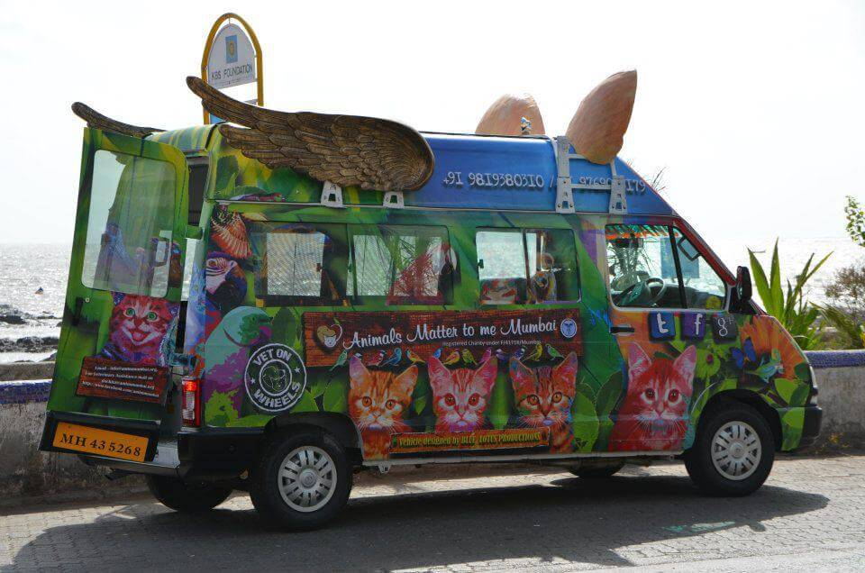

Who are we?
Furry Friend is a clinical rescue facility for strays & abandoned ownerless animals, birds & reptiles in need of help. We run a shelter cum hospital in Malad, Mumbai and offer services of Adoption, Animal Shelter, Medical Treatment, Sterilisation & Animal Ambulance
Our Efforts During Covid-19
The stray animals of Mumbai are also suffering along with the world from the shocks of COVID19. In these times, the animals have no sources of food nor are well-wishers and caregivers allowed to step out to feed them. With the support of the government, authorities and volunteers, we have been feeding over 1200 animals for over 60 days. This has placed an immense strain on our resources and we require your support and contributions to get through these times
We are a not-for-profit, charitable
organization in India committed to the
welfare of animals, birds and other species